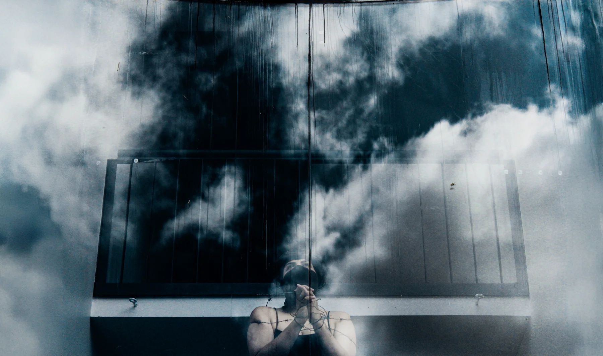

PERFORMANCE / REGISTRO01 — PERFORMANCE
Sin D-litos
Acción performativa realizada en la FAAD de la Universidad Católica de Temuco. Materialidades duras y opresivas articulan una reflexión sobre las rutinas que reprimen la emocionalidad en la sociedad contemporánea.